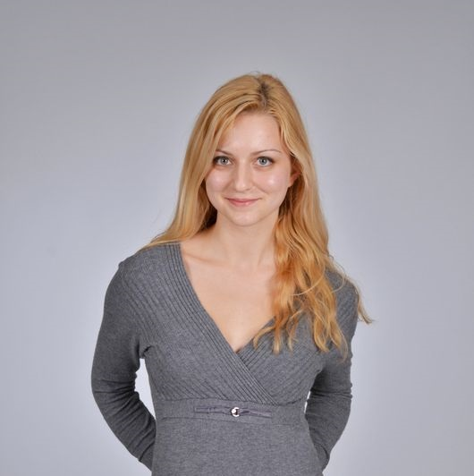

I am a postgraduate student in the University of Glasgow’s Institute of Neuroscience and Psychology. I work with Dr Christoph Scheepers.
My principal research interests lie in the field of Psycholinguistics, including language learning, reading and communication. I would like to commit myself to the research of language-based learning disabilities, such as dyslexia, in order to develop reliable diagnostic tools for early detection of reading impairments and contribute to the establishment of effective interventions to achieve the best possible outcomes for school age dyslexic children.
2017 - 2018 - University of Glasgow - MSc Research Methods of Psychological Science Modules included: Cognitive Brain Imaging Methods, Matlab programming, Statistics, R programming, Research Methods in Cognitive Sciences, Qualitative Methods
2013 - 2017 - University of Glasgow - BSc (Hons) Psychology Degree classification: Upper Second Class Honours, 2:1 Modules included: Statistics using R and SPSS, Neuropsychology, Physiological Psychology, Occupational Psychology, Neuropsychological Deficits, Cognitive Psychology, Individual Differences, Perception and Visual Cognition, Research Mini Projects using E-Prime and Matlab Additional subjects included Archaeology Level 1 and 2, German language Level 1 and 2
2008 - 2013 - Fifth Language School “Yoan Exarch” Highers: English (A), German (B), History and civilization (A), Mathematics (B), Philosophy (A), Geography and economics (A), Ethics and law (A), Informatics (A), Physics and astronomy (A)
June 2016 - Aug 2016 - Medical Research Scotland - Research assistant
I was awarded a Vacation Scholarship by Medical Research Scotland (MRS) for my research project titled “The pseudohomophone effect in written word processing: an eye tracking investigation”, which I conducted under the supervision of Dr Christoph Scheepers at the University of Glasgow
Gained experience in advanced statistical modelling techniques (bootstrapping, non-linear curve fitting, mixed effects modelling of response times), in the use of a head-mounted eye tracker (SR Research EyeLink II), as well as in the use of linguistic corpora for stimulus selection and control of confounding factors, such as frequency of occurrence, syllabic structure, orthographic neighbours, N-gram frequencies
The study is to be submitted to Frontiers in Psychology
Confident in use of various statistical packages and programming languages for data analysis: R, SPSS
Skilled in use of software tools for computerised experiment design and data collection: DMDX, E-Prime
Extensive experience in use of head-mounted eye tracker device: SR Research EyeLink II
Skilled in giving academic and non-specialist presentations and communicating research ideas, participated in the Psychology Undergraduate Conference at the University of Glasgow
Worked as a personal assistant to Dr Sonali Shah, former Research Fellow at the University of Glasgow, April 2016 - June 2017. The role involved office work, as well as providing support with presentations and teaching
Experienced in report writing and writing up research work
Cardiac and Respiratory Support volunteer for Chest Heart and Stroke Scotland - completed a First Aid course with the British Red Cross in November 2015, undertook training in techniques and strategies of communication support for individuals with respiratory illness and heart failure
Volunteered for Karin Dom Foundation - provided communication skills development workshops for children with special needs and their families, provided support through group and individual sessions
University of Glasgow 58 Hillhead Street, Glasgow, G12 8QB